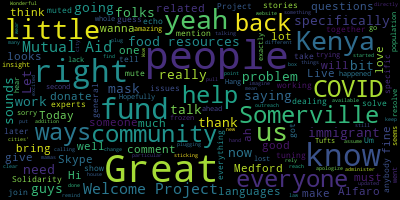

[Callahan]: Everyone, thanks for tuning in to Solidarity Live, where we take questions and stories from the community in Somerville and Medford. We bring in experts to talk about those issues, and then we work to solve those together. Today, I have on someone from the Welcome Project. She's going to talk all about everything they do with our immigrant community and a specific fund that she's working with today. And I'm going to bring her right in. So this is Let me have her join us. Great, this is Kenya Alfaro of The Welcome Project. Hi, Kenya, you're live.
[gDhRmP_86Kw_SPEAKER_02]: Hi.
[Callahan]: Hi, how are you? I'm doing well, as well as I guess you can be right now. Yeah, yeah. I would love for you to just tell us a little bit about what the Welcome Project does in general, and then specifically how you're dealing with COVID.
[gDhRmP_86Kw_SPEAKER_02]: Sure. So my name is Kenya Alfaro. I'm the Director of Parental Engagement at the Welcome Project. And we're an immigrant nonprofit based in the city of Somerville, but we work with immigrants throughout the whole greater Boston region. And our mission is to build the collective power of immigrants so that they can participate in community decisions, whatever that might look like, whether it be cities or schools or their own neighborhoods. And so usually what we would have kind of going on throughout the school year is an array of different programs. We have our largest program is our adult ESOL program and we serve over 200 adult immigrants in those classes. We have an interpretation program for bilingual high school youth in both Medford and Somerville high school. a lot of different other youth programming that focus on K-8 students, whether it be cultural identity, and just kind of exploring what it means for them to be bicultural. And, you know, we act upon a lot of different organizing movements as well, like the Driver's License Campaign here in Massachusetts. We have a rapid response network serving to, you know, inform community members of any ICE activity as well. So that's just kind of like a quick snapshot of you know, usually what we have going on.
[Callahan]: Great. Um, I will mention, I just got a comment from someone saying that there's a little bit of an echo, so I don't know if anybody's not muted or because we have people later in the show who are on right now. But if you can mute, that would be great. Hopefully this problem will resolve. Great. So it sounds like you guys really have good insight into our immigrant population and how they're doing. And I would love to hear as much as you can how our immigrant community is doing now during COVID.
[gDhRmP_86Kw_SPEAKER_02]: Sure, yeah, so I think we've taken the past, I don't know how many days we've been in this situation, just to kind of assess some needs and figure out, you know, a lot of the first initial things we're finding out how our families that we were working with were doing. And then it became, well, how are the rest of our immigrant families doing throughout these cities? And so, you know, through the Welcome Project, we were hearing a lot of stories of folks losing their jobs, of folks kind of being getting worried about paying rent. Food access was becoming a really, really large issue. And so, you know, the city of Somerville, you know, I think really stepped in and did a lot of things to provide some of those food resources.
[Callahan]: You're saying food resources are a problem because of just lack of funds, is that right?
[gDhRmP_86Kw_SPEAKER_02]: It's lack of funds, but also, you know, at a certain point you also did have to, like really fast, you had to have a mask to go inside a grocery store and lots of people didn't have So they felt intimidated to go into grocery stores to go and get the supplies of food. And so funding and kind of that fear of like going, what if people are going to judge me if I don't have the proper attire to go inside? So those kind of were coming about just in the people that we were talking about, people that we were talking to, and that spurred us to, we had,
[Callahan]: I think it seems like you've frozen. So give me one second, everyone. It looks like we had a little problem with Skype. Hang on. We are just trying to get Kenya Alfaro back on from the Welcome Project. I'm going to go ahead and do what I can. to get Kenya back on, to get our folks from Tufts Mutual Aid back on. They are also, ah, great. So it looks like, ah, we have everyone back, amazing. So sorry about that, I do not know exactly what happened, but I lost all of you and my whole Skype went down. So I apologize, thanks everyone for sticking with us. So Kenya. You were talking about food resources and how the city of Somerville has really done some work there to make food resources available to people.
[gDhRmP_86Kw_SPEAKER_02]: Yeah, they did. I think, you know, the public schools, we were hearing a lot of families kind of going into the public schools. They did an amazing job at providing breakfast and lunch for a lot of families. You know, the food pantries like started up and running and trying to really get some food out to families. And that was, I think we've heard that be an issue. And the calls I've been making maybe the past two weeks as well, I've been hearing a lot of people who are still worried about food in other cities, not in Somerville, but in other cities as well.
[Callahan]: Right, yeah. And do you know if folks in that community have been plugging into the Mutual Aid, so the Medford and Somerville Mutual Aid, or in any of the other cities' Mutual Aid projects?
[gDhRmP_86Kw_SPEAKER_02]: A few of them had. There are a lot who had not heard of mutual aids, nor did they understand the concept of a mutual aid, right? So I also, you know, like was learning about, okay, what does this mean? What does it look like? And so I think the past two weeks that we've been, I've been making a lot more phone calls. My next question is, oh, did you know that you can also get food from other places? And have you contacted mamas? Have you contacted like, the Cambridge or Habitat, other mutual aid networks, to get them plugged into different resources so that they know that they're out there. And I think it comes, people are very surprised, at least the families that I work with, they're very surprised that someone's just gonna go deliver groceries to their front doorstep, but they're really, really appreciative of that as well.
[Callahan]: Great, yeah. And you have a particular fund that you administer, is that right? Do you wanna talk a little bit about that?
[gDhRmP_86Kw_SPEAKER_02]: Yeah, sure. The Immigrant Assistance Fund that we have running through the Whatcom Project right now, it is We started, we had a donor who really wanted to help out. We knew that there were a lot of economic hardships and we knew that we wanted to help out. We just didn't, we weren't sure how to do it. And, you know, there was the first step and more people wanted to see how they could help us and how they could donate and how they can help families. And it quickly became something very, I guess, easy that we said we needed to do something, even if it's, providing a little bit of financial support. And so this fund is open to immigrant families in Somerville, Medford, Cambridge, Everett, and Malden. And specifically those areas, we know that Somerville does have some support services, but We have a lot of students who come from those different cities, and we really wanted to make sure that if our students are coming from those, that means that there are other families who are also in those cities who might also be needing some resources. And so we really wanted to be the outreach where in some cities there might not be as much support as maybe Somerville has. We wanted to make sure that at least families could have a little bit of something through us. And so, you know, it's a very simple, I guess, quick application. It's just a name and a phone number with language preference. And we give folks a call back. We ask a few questions. And from there, we kind of see how we can support them. As we tell a lot of the families, it's not a lot of money that we are able to support them, but it helps with a little bit that they might be having and then connecting them through different resources throughout. And so I think, you know, a lot of the fund and the phone calls, you know, the communication with families is, yeah, we're providing them some financial support that they might need, but also it's about connecting them to different community resources that they might not be aware are there. And that just might be for many different reasons. It just may be communication, it be like language barriers or whatever it might be. So this fund is just there to give a little, to just give a little, a partial little cushion for any expenses that they see for themselves and for their families, really. Yeah.
[Callahan]: I'll just remind people that if you have any questions, you can just put those in the comment box and we can pull those right in. In your outreach, you guys must have a lot of languages on hand, I imagine. When you're calling through people, how many different languages do you have to rely on to reach out to people?
[gDhRmP_86Kw_SPEAKER_02]: Yeah. I'm a native Spanish speaker, so I do basically all of the Spanish intakes. And then the second language, the highest need that we had was Portuguese. And we, because we have an interpreters program within our organization, our interpreters have been able to help out in Portuguese. Spanish and Portuguese have been the highest needs right now. We had some for Creole, which as well, we also have some interpreters and some other volunteers who were able to help. We also have some families that we work with who are higher, like English, confident and so they have also been helping us. We've been able to stipend them and they've been helping us as well with some of these calls. So it's really thanks to the interpreters. I've rediscovered three-way calls again, which I had to Google how to do a three-way call. And so even though like our staff internally who are making the phone calls might not have all of those languages, we do have, you know, our mission within the Welcome Project, because it supports all of these programs, allows us then to have that language capacity to be able to reach out to as many families as we have.
[Callahan]: Great, that is great. And are there ways that people can help? I mean, it sounds like people can donate to that fund specifically. And the fund, I assume, is directly related to COVID, and it started with COVID, and so it really has to do with that. Are there other ways in addition to that that people can help?
[gDhRmP_86Kw_SPEAKER_02]: You know, as of right now, the donating to the fund is really, really amazing for us. We're always looking for, in-house we don't have folks who can help us maybe with like graphics. So if anyone is like volunteering for graphics or for media or photography or whatever it is, we're always kind of looking for ways for folks to help us create something that could give us a bigger outreach as well. So volunteering, there are a lot of skill sets that we wish we could have at the Wellcome Project, and sometimes it just takes that one reaching out to us and saying, hey, I have this skill set. Do you have any need? Would you like any of this? And usually we do. We need some support in that. And so that's another way as well. Yeah, but like you said, this fund really came out because of COVID. And we want to make sure that we are able to just keep sustaining this fund as much as possible. then I would say about donating to this fund is also a huge, huge, huge way to help us. And again, any other idea that you have, you know, we have people approach us of, do you need art supplies for families? Like, yeah, we'll take some, we'll deliver them, you know, we'll kind of do like anything that's out of the box and creative, we will probably find a way that we can kind of use these volunteer opportunities.
[Callahan]: Yeah, good. It sounds like at one point there was a need for masks. I know you know, a lot of folks and mamas are excited to make masks, so I don't know if that's something that people still need.
[gDhRmP_86Kw_SPEAKER_02]: Yeah, you know, with this whole new rule in Somerville, we're kind of really trying to assess what that means.
[Callahan]: Let's be clear, there's a new law in Somerville saying that when out of your house, you must wear a mask, and there is a fine, up to $300, I think, fine related to that.
[gDhRmP_86Kw_SPEAKER_02]: Right and so we're you know we're trying to kind of assess what that looks like and if people are even hearing that news because a lot of this news does go out through any communication like city communication and a lot of our families aren't actually subscribed to that nor do they feel comfortable subscribing to those email communications or even phone call communications. So I've been asking whenever people tell me like oh I haven't been going to the groceries I try to ask them is it because what is it like do you need a mask and I've had a few people who have said yeah I would like a face covering and I would like a mask but we're not entirely sure how we would even get them those to them quite yet so we are trying to brainstorm and really rethink what this what this order, what this law means for our families and the impact that it's going to have on them and also accessing other different resources, basic, basic resources. So that might be a need. And again, there's some things that we don't even think about on the spot that someone could email us and say, hey, did you think about this? Or do you know if you need this? And we might actually need it. We just haven't actually thought about it in the moment.
[Callahan]: Great, do you wanna give just a little plug for like how people can find you, how people can donate to the fund or help out in other ways? Like specifically, like what's the website and?
[gDhRmP_86Kw_SPEAKER_02]: Yeah, sure. So folks can visit our website, it's welcomeproject.org. And you can find information about us and other programs that we have as well. We are thinking about potentially doing things virtually this summer. And so one of the things that we're always looking for are ESOL teachers or folks to help us with our like our camp or after school programming, that website will kind of give you more of a better overview, I think, of what we do. If you would like to donate, there's also a little blue button on the top right corner as well that you can donate, or you can also find out a bit more information about our fund right there as well, or any other resources regarding COVID in multiple cities as well.
[Callahan]: Wow. Thank you so much. Great work that you guys are doing. Wonderful to have you on and keep us updated. Let us know as things change, if there are more needs and other ways that people can help.
[gDhRmP_86Kw_SPEAKER_02]: Great. Thank you so much for having me. Thank you.
[Callahan]: Great to have you.
|
total time: 5.23 minutes total words: 729  |
|||
{kind=link}